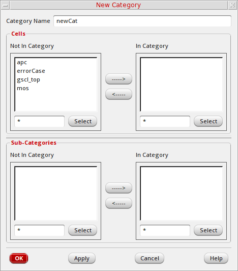
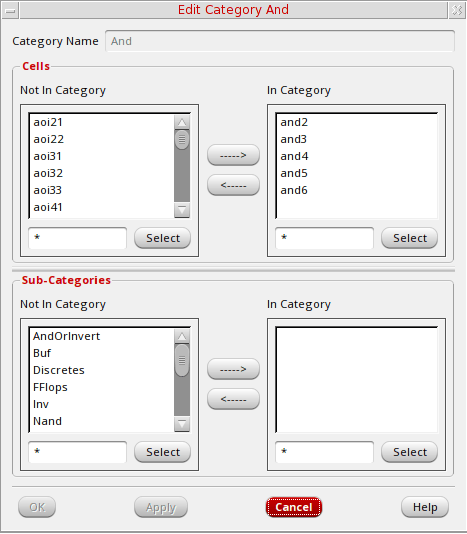
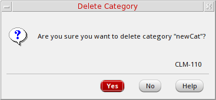
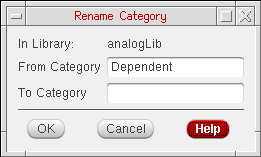
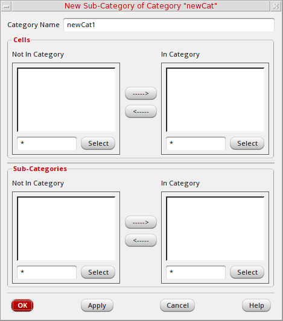

8
Managing Categories
To manage a large number of cells in a library, you can assign them to categories. You must have
The following topics are discussed:
- Viewing Categories
- Creating a Category
- Editing a Category
- Deleting a Category
- Creating a Subcategory
.TopCat file. The libraryName.TopCat file contains a list of all the category files (categoryName.Cat) defined in that library. Each .Cat file contains a list of cells that are in that category.Viewing Categories
How you view categories depends on whether you are using Library Manager in View – Lists mode or in View – Tree mode. See
- “Viewing Categories and Files in View – Lists Mode”
- “Viewing Categories and Files in View – Tree Mode”
Creating a Category
To create a new category, follow these steps:
- Select a library.
-
Choose File – New – Category.
The New Category form is displayed (see “New Category Form”).
 -
In the Category Name field, type the name of the new category.
Category names must be unique and legal in the namespace where you are working. -
In the Cells group box, in the Not In Category list box, select the cells you want to include in this category.
You can useShift-click andControl-click to modify your selection set (see also “Moving Data in List Boxes”). -
Click the right arrow to move them to the In Category list box.
If an error message stating that the software cannot open or cannot write to the category appears, make sure you have write permission for the category files. -
Click OK.
If your library is under design management, the Auto Check In form appears. You can click OK to check in the new category.
The New Category form closes and the new category appears in the Library Manager. If this is the first category you are creating in your library, the Everything and Uncategorized categories are also created.
Editing a Category
To change the contents of a category, follow these steps:
- Select the Category you want to change.
-
Choose Edit – Categories – Modify.If your library is under design management, the Auto Check Out form appears. You can click OK to check out the category.The Edit Category form appears (see “Edit Category Form”).
The contents of the category you specified appear in the In Category list box. -
In the Cells group box, do at least one of the following:
- In the Not In Category list box, select additional cells you want to include in this category and click the right arrow to move them to the In Category list box.
-
In the In Category list box, select cells you want to remove from this category and click the left arrow to move them to the Not In Category list box.See “Moving Data in List Boxes” for information about moving data from one list box to the other.
-
Click OK.
If your library is under design management, the Auto Check In form appears. You can click OK to check in the category.
The Library Manager saves the modifications you made to the category.
Deleting a Category
To delete a category, follow these steps:
- Select the category you want to delete.
-
Choose Edit – Categories – Delete.
The Delete Category message prompt appears.
 - Click Yes.
The Library Manager deletes the category.
Renaming a Category
To rename a category, follow these steps:
- Select the category you want to rename.
-
Choose Edit – Categories – Rename.
The Rename Category message prompt appears.
 - Specify the new category name in the To Category text box.
- Click OK.
The Library Manager renames the category.
Creating a Subcategory
You can group cells into subcategories within a category. For instance, a pins category might be too inclusive, and subcategories of bidirectional, input, and output pins might be more manageable.
You can use any of the following methods to create subcategories:
- Creating a New Category That Includes Subcategories
- Creating a Subcategory in an Existing Category
- Modifying a Category to Include a Subcategory
Creating a New Category That Includes Subcategories
To create a new category that includes subcategories, follow these steps:
- Select a library.
-
Create each of the categories (such as inputs and outputs) that you want to specify as subcategories by doing the following:
-
Choose File – New – Category.
The New Category form appears (see “New Category Form”). -
In the Category Name field, type the name of the new category.
-
Choose File – New – Category.
-
After you have created all the categories that will be specified as subcategories, create the top-level category in the following way:
-
Choose File – New – Category.
The New Category form appears (see “New Category Form”). - In the Category Name field, type the name of the new category.
- In the Sub-Categories group box, move the categories you want to be subcategories (such as Inputs and Outputs) to the In Category list box.
- Click OK.
-
Choose File – New – Category.
The New Category form closes. The new category has the specified subcategories.
For more information about viewing categories and subcategories, see “Viewing Categories and Files in View – Lists Mode” and “Viewing Categories and Files in View – Tree Mode”.
Creating a Subcategory in an Existing Category
To create a new subcategory in an existing category, follow these steps:
- Select the category for which you want to create a subcategory.
-
Choose Edit – Categories – New Sub-Category .
The New Sub-Category form appears.
 - In the Category Name field, type the name of the new subcategory.
- In the Cells group box, in the Not In Category list box, select the cells you want to include in this subcategory.
- Click the right arrow to move them to the In Category list box.
- Click OK.
The New Sub-Category form closes. The Library Manager creates a subcategory in the selected category.
For more information about viewing categories and subcategories, see “Viewing Categories and Files in View – Lists Mode” and “Viewing Categories and Files in View – Tree Mode”.
Modifying a Category to Include a Subcategory
To modify a category to include another category, follow these steps:
- Select the category in which you want to include a subcategory.
-
Choose Edit – Categories – Modify.
The Edit Category form appears. - In the Sub-Categories group box, in the Not In Category list box, select the category you want included as a subcategory.
- Click the right arrow to move the selected subcategory to the In Category list box.
- Click OK.
The Edit Category form closes. The category you moved is now a subcategory of the modified category.
For more information about viewing categories and subcategories, see “Viewing Categories and Files in View – Lists Mode” and “Viewing Categories and Files in View – Tree Mode”.
Return to top